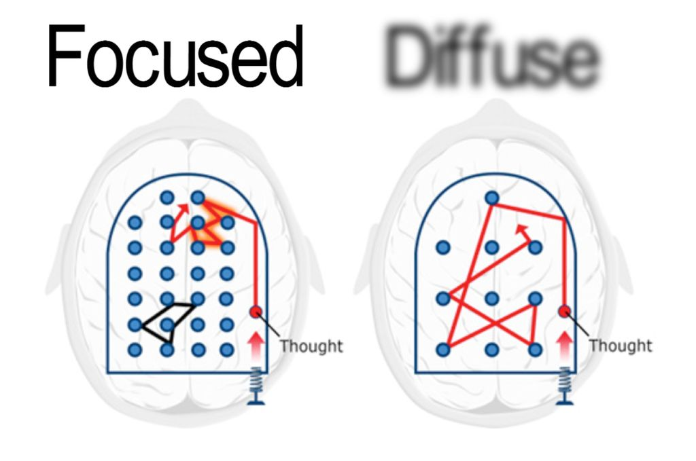
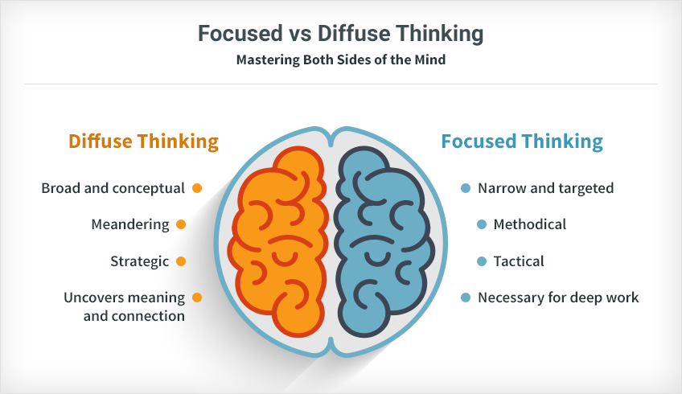
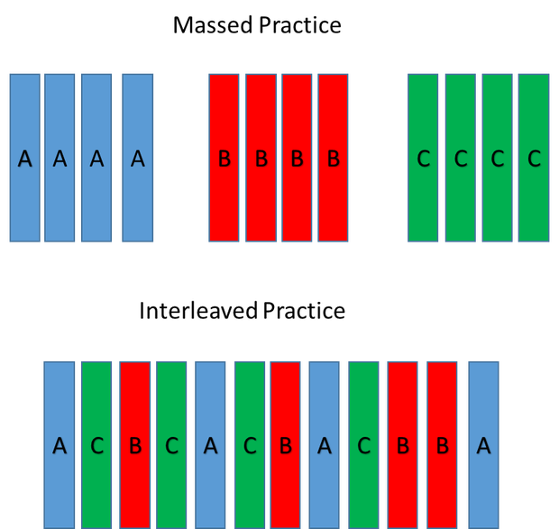
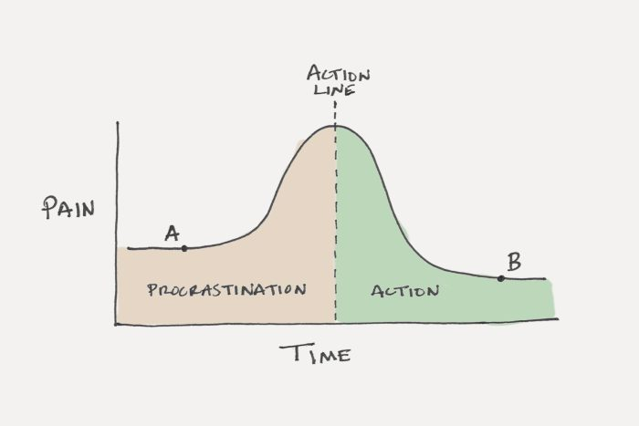
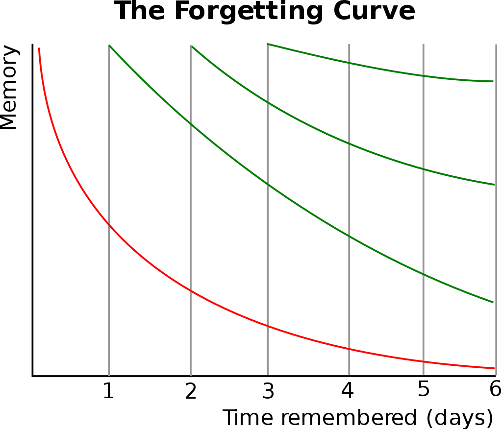

![Logo](data:image/svg+xml;base64,PD94bWwgdmVyc2lvbj0iMS4wIiBlbmNvZGluZz0idXRmLTgiPz4KPCEtLSBHZW5lcmF0b3I6IEFk%0D%0Ab2JlIElsbHVzdHJhdG9yIDIzLjAuMSwgU1ZHIEV4cG9ydCBQbHVnLUluIC4gU1ZHIFZlcnNpb246%0D%0AIDYuMDAgQnVpbGQgMCkgIC0tPgo8c3ZnIHZlcnNpb249IjEuMSIgaWQ9IkxheWVyXzEiIHhtbG5z%0D%0APSJodHRwOi8vd3d3LnczLm9yZy8yMDAwL3N2ZyIgeG1sbnM6eGxpbms9Imh0dHA6Ly93d3cudzMu%0D%0Ab3JnLzE5OTkveGxpbmsiIHg9IjBweCIgeT0iMHB4IgoJIHZpZXdCb3g9IjAgMCA4MDAgODAwIiBz%0D%0AdHlsZT0iZW5hYmxlLWJhY2tncm91bmQ6bmV3IDAgMCA4MDAgODAwOyIgeG1sOnNwYWNlPSJwcmVz%0D%0AZXJ2ZSI+CjxzdHlsZSB0eXBlPSJ0ZXh0L2NzcyI+Cgkuc3Qwe2ZpbGw6IzhENzFFMjt9Cgkuc3Qx%0D%0Ae2ZpbGw6Izc2NTJDRTt9Cgkuc3Qye2ZpbGw6Izc4NTFBOTt9Cjwvc3R5bGU+CjxnPgoJPGNpcmNs%0D%0AZSBjeD0iMjUwOCIgY3k9IjQwMCIgcj0iMzg4Ii8+Cgk8Zz4KCQk8cGF0aCBjbGFzcz0ic3QwIiBk%0D%0APSJNMjcwNy4zNSwyMzkuMDVMMjcwNy4zNSwyMzkuMDVjMCwwLDAuMDEsMC4wMSwwLjAxLDAuMDFM%0D%0AMjcwNy4zNSwyMzkuMDV6Ii8+CgkJPHBhdGggY2xhc3M9InN0MCIgZD0iTTI3NDkuNzEsMjkxLjAz%0D%0AYy0xLjgyLTguNTMtNi44NC0xNi45Mi0xNS4wOC0yNS4xOGMtNS4zMS01LjMzLTEwLjU5LTguNDct%0D%0AMTUuNzUtOS40NQoJCQljLTUuMjUtMC45OC05LjktMC4yOC0xNC4xMSwyLjIxYy00LjE4LDIuNDUt%0D%0AOS4zNSw2LjcyLTE1LjQ5LDEyLjg0bC01Ny4yMiw1Ny4wOGMtNy4zMi0xMS4zNy05LjgzLTIyLjkz%0D%0ALTcuNS0zNC42MwoJCQljMi4zMy0xMS43Myw3Ljk3LTIyLjA3LDE2LjkxLTMwLjk5YzE2Ljk2LTE2%0D%0ALjkyLDMzLjM4LTIxLjM4LDQ5LjMtMTMuNGwxNi41Ny0xMC40NWMtOS40NC05LjkzLTIyLjE0LTE0%0D%0ALjQzLTM4LjExLTEzLjQ1CgkJCWMtMTUuOTQsMC45NS0zMC43Myw4LjI3LTQ0LjQ0LDIxLjk1Yy0x%0D%0ANC43OSwxNC43Ni0yMi4yNCwzMS41MS0yMi4zMiw1MC4zMmMtMC4wOCwxOC43Miw1LjI1LDMzLjQ5%0D%0ALDE1Ljk3LDQ0LjI0bC0yMS4yNiwyMS4yMgoJCQljLTAuOTUtMS4wMi0xLjkyLTIuMDMtMi45My0z%0D%0ALjAyYy0xNy40LTE3LjE5LTQyLjU2LTI2LjczLTc1LjMzLTI4Ljh2LTI4LjM2aDQzLjkzdi0yMi42%0D%0AaC0xMTUuOHYyMi42aDQwLjg0djI4LjM2CgkJCWMtMjIuNDcsMS4xLTQxLjAyLDUuNjktNTUuNTgs%0D%0AMTMuNzZjLTYuODIsMy44LTEyLjksOC4yNC0xOC4yNiwxMy4zMWwtMTYuNS0xNi40NmMxMC43Mi0x%0D%0AMC43NSwxNi4wNS0yNS41MiwxNS45Ny00NC4yNAoJCQljLTAuMDgtMTguOC03LjUzLTM1LjU2LTIy%0D%0ALjMyLTUwLjMyYy0xMy43MS0xMy42OC0yOC40OS0yMC45OS00NC40NC0yMS45NWMtMTUuOTYtMC45%0D%0AOC0yOC42NiwzLjUyLTM4LjExLDEzLjQ1bDE2LjU3LDEwLjQ1CgkJCWMxNS45Mi03Ljk4LDMyLjM0%0D%0ALTMuNTIsNDkuMywxMy40YzguOTQsOC45MiwxNC41OCwxOS4yNiwxNi45MSwzMC45OWMyLjMzLDEx%0D%0ALjctMC4xOCwyMy4yNi03LjUsMzQuNjNsLTU3LjIyLTU3LjA4CgkJCWMtNi4xMy02LjEyLTExLjMt%0D%0AMTAuMzktMTUuNDktMTIuODRjLTQuMjEtMi40OC04Ljg2LTMuMTgtMTQuMTEtMi4yMWMtNS4xNyww%0D%0ALjk4LTEwLjQ0LDQuMTItMTUuNzUsOS40NQoJCQljLTguMjQsOC4yNi0xMy4yNiwxNi42NS0xNS4w%0D%0AOCwyNS4xOGMtMS44LDguNTYtMC45LDE4LjE5LDIuNzYsMjguOTdjMy42OCwxMC44Myw5LjYzLDIw%0D%0ALjM1LDE3Ljk2LDI4LjY2CgkJCWM2Ljk1LDYuOTQsMTUuMzMsMTIuNDcsMjUuMTMsMTYuNTVjOS43%0D%0AOCw0LjEsMjAuNzgsNS45MiwzMi45OCw1LjM4YzEyLjE4LTAuNTYsMjQuNTMtNC44OCwzNy4wMi0x%0D%0AMy4wM2wxOC4wNywxOC4wMgoJCQljLTAuNiwwLjk3LTEuMTksMS45Ni0xLjc2LDIuOTdjLTguMDIs%0D%0AMTQuMDctMTEuOTksMjkuNzgtMTEuOTksNDcuMTJjMCwyNi41LDkuMiw0OC4yOCwyNy42NSw2NS4y%0D%0AOQoJCQljMTguNDIsMTYuOTYsNDMuMDIsMjYuMDYsNzMuOCwyNy4yMXYzMy43NmgtNDAuODR2MjIu%0D%0ANmgxMTUuOHYtMjIuNmgtNDMuOTN2LTMzLjc2YzI5Ljk1LTEuMDIsNTQuMzItOS44MSw3My4yMS0y%0D%0ANi4zNAoJCQljMTguODMtMTYuNTMsMjguMjYtMzkuMDgsMjguMjYtNjcuNmMwLTE1Ljk2LTMuNDMt%0D%0AMzAuMy0xMC4yNy00Mi45OWwyMy43NC0yMy42OWMxMi40OSw4LjE1LDI0Ljg0LDEyLjQ3LDM3LjAy%0D%0ALDEzLjAzCgkJCWMxMi4xOSwwLjU0LDIzLjE5LTEuMjgsMzIuOTgtNS4zOGM5LjgtNC4wOSwxOC4x%0D%0AOC05LjYyLDI1LjEzLTE2LjU1YzguMzMtOC4zMSwxNC4yOC0xNy44MywxNy45Ni0yOC42NgoJCQlD%0D%0AMjc1MC42MSwzMDkuMjIsMjc1MS41MSwyOTkuNTksMjc0OS43MSwyOTEuMDN6IE0yMzM2LjcxLDM0%0D%0AOS44NmMtMTIuMTMtMS42NC0yMy43Mi04LjAxLTM0Ljg4LTE5LjE1CgkJCWMtMTAuMzYtMTAuMzMt%0D%0AMTUuOTktMTkuNzktMTYuOTUtMjguMzFjLTAuOTMtOC41NSwwLjc1LTE0Ljk2LDUuMDMtMTkuMjVj%0D%0AMy4wNC0zLjA1LDYuMzYtNC4yMyw5Ljg3LTMuNTVzOC44NCw0LjYzLDE2LjAxLDExLjc5CgkJCWw1%0D%0AMi4wNCw1MS45MkMyMzU5LjE4LDM0OS4zLDIzNDguODEsMzUxLjQ3LDIzMzYuNzEsMzQ5Ljg2eiBN%0D%0AMjQzOC41MSw0NzQuNjFjLTEzLjItMTEuMjUtMTkuODEtMjcuNTUtMTkuODEtNDkuMQoJCQljMC0y%0D%0AMS4zNSw2LjA1LTM3LjY0LDE4LjEyLTQ5LjA0YzEyLjEyLTExLjQsMjkuMTMtMTcuNDgsNTEuMDct%0D%0AMTguMDd2MC4wM3YxMzMuNDNDMjQ2OC4xOSw0OTEuNTIsMjQ1MS43MSw0ODUuNzgsMjQzOC41MSw0%0D%0ANzQuNjF6CgkJCSBNMjU3MC4yLDQ3My40NmMtMTIuMzMsMTEuNjEtMjkuNDcsMTcuNzEtNTEuMjcs%0D%0AMTguMzd2LTEzMy40YzIyLjkxLDAsNDAuMjYsNi4xOCw1Mi4wOSwxOC42YzExLjg0LDEyLjM4LDE3%0D%0ALjczLDI4LjQyLDE3LjczLDQ3Ljk5CgkJCUMyNTg4Ljc1LDQ0NS42OCwyNTgyLjU3LDQ2MS44NSwy%0D%0ANTcwLjIsNDczLjQ2eiBNMjczMS4xMiwzMDIuMzljLTAuOTUsOC41My02LjU5LDE3Ljk4LTE2Ljk1%0D%0ALDI4LjMxCgkJCWMtMTEuMTcsMTEuMTQtMjIuNzYsMTcuNTEtMzQuODgsMTkuMTVjLTEyLjEsMS42%0D%0AMS0yMi40Ny0wLjU1LTMxLjEzLTYuNTZsNTIuMDQtNTEuOTJjNy4xNy03LjE2LDEyLjUtMTEuMTEs%0D%0AMTYuMDEtMTEuNzkKCQkJczYuODMsMC41MSw5Ljg3LDMuNTVDMjczMC4zNywyODcuNDQsMjczMi4w%0D%0ANCwyOTMuODQsMjczMS4xMiwzMDIuMzl6Ii8+CgkJPHBhdGggY2xhc3M9InN0MCIgZD0iTTIzMDgu%0D%0ANjQsMjM5LjA3YzAsMCwwLjAxLTAuMDEsMC4wMS0wLjAxbDAsMEwyMzA4LjY0LDIzOS4wN3oiLz4K%0D%0ACTwvZz4KPC9nPgo8Zz4KCTxjaXJjbGUgY3g9IjE0NTgiIGN5PSI0MDAiIHI9IjM4OCIvPgoJPGc+%0D%0ACgkJPHBhdGggY2xhc3M9InN0MSIgZD0iTTE2NTcuMzUsMjM5LjA1TDE2NTcuMzUsMjM5LjA1YzAs%0D%0AMCwwLjAxLDAuMDEsMC4wMSwwLjAxTDE2NTcuMzUsMjM5LjA1eiIvPgoJCTxwYXRoIGNsYXNzPSJz%0D%0AdDEiIGQ9Ik0xNjk5LjcxLDI5MS4wM2MtMS44Mi04LjUzLTYuODQtMTYuOTItMTUuMDgtMjUuMThj%0D%0ALTUuMzEtNS4zMy0xMC41OS04LjQ3LTE1Ljc1LTkuNDUKCQkJYy01LjI1LTAuOTgtOS45LTAuMjgt%0D%0AMTQuMTEsMi4yMWMtNC4xOCwyLjQ1LTkuMzUsNi43Mi0xNS40OSwxMi44NGwtNTcuMjIsNTcuMDhj%0D%0ALTcuMzItMTEuMzctOS44My0yMi45My03LjUtMzQuNjMKCQkJYzIuMzMtMTEuNzMsNy45Ny0yMi4w%0D%0ANywxNi45MS0zMC45OWMxNi45Ni0xNi45MiwzMy4zOC0yMS4zOCw0OS4zLTEzLjRsMTYuNTctMTAu%0D%0ANDVjLTkuNDQtOS45My0yMi4xNC0xNC40My0zOC4xMS0xMy40NQoJCQljLTE1Ljk0LDAuOTUtMzAu%0D%0ANzMsOC4yNy00NC40NCwyMS45NWMtMTQuNzksMTQuNzYtMjIuMjQsMzEuNTEtMjIuMzIsNTAuMzJj%0D%0ALTAuMDgsMTguNzIsNS4yNSwzMy40OSwxNS45Nyw0NC4yNGwtMjEuMjcsMjEuMjIKCQkJYy0wLjk1%0D%0ALTEuMDItMS45Mi0yLjAzLTIuOTMtMy4wMmMtMTcuNC0xNy4xOS00Mi41Ni0yNi43My03NS4zNC0y%0D%0AOC44di0yOC4zNmg0My45M3YtMjIuNmgtMTE1Ljh2MjIuNmg0MC44NHYyOC4zNgoJCQljLTIyLjQ3%0D%0ALDEuMS00MS4wMiw1LjY5LTU1LjU4LDEzLjc2Yy02LjgyLDMuOC0xMi45LDguMjQtMTguMjYsMTMu%0D%0AMzFsLTE2LjUtMTYuNDZjMTAuNzItMTAuNzUsMTYuMDUtMjUuNTIsMTUuOTctNDQuMjQKCQkJYy0w%0D%0ALjA4LTE4LjgtNy41My0zNS41Ni0yMi4zMi01MC4zMmMtMTMuNzEtMTMuNjgtMjguNDktMjAuOTkt%0D%0ANDQuNDQtMjEuOTVjLTE1Ljk2LTAuOTgtMjguNjYsMy41Mi0zOC4xMSwxMy40NWwxNi41NywxMC40%0D%0ANQoJCQljMTUuOTItNy45OCwzMi4zNC0zLjUyLDQ5LjMsMTMuNGM4Ljk0LDguOTIsMTQuNTgsMTku%0D%0AMjYsMTYuOTEsMzAuOTljMi4zMywxMS43LTAuMTgsMjMuMjYtNy41LDM0LjYzbC01Ny4yMi01Ny4w%0D%0AOAoJCQljLTYuMTMtNi4xMi0xMS4zLTEwLjM5LTE1LjQ5LTEyLjg0Yy00LjIxLTIuNDgtOC44Ni0z%0D%0ALjE4LTE0LjExLTIuMjFjLTUuMTcsMC45OC0xMC40NCw0LjEyLTE1Ljc1LDkuNDUKCQkJYy04LjI0%0D%0ALDguMjYtMTMuMjYsMTYuNjUtMTUuMDgsMjUuMThjLTEuOCw4LjU2LTAuOSwxOC4xOSwyLjc2LDI4%0D%0ALjk3YzMuNjgsMTAuODMsOS42MywyMC4zNSwxNy45NiwyOC42NgoJCQljNi45NSw2Ljk0LDE1LjMz%0D%0ALDEyLjQ3LDI1LjEzLDE2LjU1YzkuNzgsNC4xLDIwLjc4LDUuOTIsMzIuOTgsNS4zOGMxMi4xOC0w%0D%0ALjU2LDI0LjUzLTQuODgsMzcuMDItMTMuMDNsMTguMDcsMTguMDIKCQkJYy0wLjYsMC45Ny0xLjE5%0D%0ALDEuOTYtMS43NiwyLjk3Yy04LjAyLDE0LjA3LTExLjk5LDI5Ljc4LTExLjk5LDQ3LjEyYzAsMjYu%0D%0ANSw5LjIsNDguMjgsMjcuNjUsNjUuMjkKCQkJYzE4LjQyLDE2Ljk2LDQzLjAyLDI2LjA2LDczLjgs%0D%0AMjcuMjF2MzMuNzZoLTQwLjg0djIyLjZoMTE1Ljh2LTIyLjZoLTQzLjkzdi0zMy43NmMyOS45NS0x%0D%0ALjAyLDU0LjMyLTkuODEsNzMuMjEtMjYuMzQKCQkJYzE4LjgzLTE2LjUzLDI4LjI2LTM5LjA4LDI4%0D%0ALjI2LTY3LjZjMC0xNS45Ni0zLjQzLTMwLjMtMTAuMjctNDIuOTlsMjMuNzQtMjMuNjljMTIuNDks%0D%0AOC4xNSwyNC44NCwxMi40NywzNy4wMiwxMy4wMwoJCQljMTIuMTksMC41NCwyMy4xOS0xLjI4LDMy%0D%0ALjk4LTUuMzhjOS44LTQuMDksMTguMTgtOS42MiwyNS4xMy0xNi41NWM4LjMzLTguMzEsMTQuMjgt%0D%0AMTcuODMsMTcuOTYtMjguNjYKCQkJQzE3MDAuNjEsMzA5LjIyLDE3MDEuNTEsMjk5LjU5LDE2OTku%0D%0ANzEsMjkxLjAzeiBNMTI4Ni43MSwzNDkuODZjLTEyLjEzLTEuNjQtMjMuNzItOC4wMS0zNC44OC0x%0D%0AOS4xNQoJCQljLTEwLjM2LTEwLjMzLTE1Ljk5LTE5Ljc5LTE2Ljk1LTI4LjMxYy0wLjkzLTguNTUs%0D%0AMC43NS0xNC45Niw1LjAzLTE5LjI1YzMuMDQtMy4wNSw2LjM2LTQuMjMsOS44Ny0zLjU1czguODQs%0D%0ANC42MywxNi4wMSwxMS43OQoJCQlsNTIuMDQsNTEuOTJDMTMwOS4xOCwzNDkuMywxMjk4LjgxLDM1%0D%0AMS40NywxMjg2LjcxLDM0OS44NnogTTEzODguNTEsNDc0LjYxYy0xMy4yLTExLjI1LTE5LjgxLTI3%0D%0ALjU1LTE5LjgxLTQ5LjEKCQkJYzAtMjEuMzUsNi4wNS0zNy42NCwxOC4xMi00OS4wNGMxMi4xMi0x%0D%0AMS40LDI5LjEzLTE3LjQ4LDUxLjA3LTE4LjA3djAuMDN2MTMzLjQzQzE0MTguMTksNDkxLjUyLDE0%0D%0AMDEuNzEsNDg1Ljc4LDEzODguNTEsNDc0LjYxegoJCQkgTTE1MjAuMiw0NzMuNDZjLTEyLjMzLDEx%0D%0ALjYxLTI5LjQ3LDE3LjcxLTUxLjI3LDE4LjM3di0xMzMuNGMyMi45MSwwLDQwLjI2LDYuMTgsNTIu%0D%0AMDksMTguNmMxMS44NCwxMi4zOCwxNy43MywyOC40MiwxNy43Myw0Ny45OQoJCQlDMTUzOC43NSw0%0D%0ANDUuNjgsMTUzMi41Nyw0NjEuODUsMTUyMC4yLDQ3My40NnogTTE2ODEuMTIsMzAyLjM5Yy0wLjk1%0D%0ALDguNTMtNi41OSwxNy45OC0xNi45NSwyOC4zMQoJCQljLTExLjE3LDExLjE0LTIyLjc2LDE3LjUx%0D%0ALTM0Ljg4LDE5LjE1Yy0xMi4xLDEuNjEtMjIuNDctMC41NS0zMS4xMy02LjU2bDUyLjA0LTUxLjky%0D%0AYzcuMTctNy4xNiwxMi41LTExLjExLDE2LjAxLTExLjc5CgkJCXM2LjgzLDAuNTEsOS44NywzLjU1%0D%0AQzE2ODAuMzcsMjg3LjQ0LDE2ODIuMDQsMjkzLjg0LDE2ODEuMTIsMzAyLjM5eiIvPgoJCTxwYXRo%0D%0AIGNsYXNzPSJzdDEiIGQ9Ik0xMjU4LjY0LDIzOS4wN2MwLDAsMC4wMS0wLjAxLDAuMDEtMC4wMWww%0D%0ALDBMMTI1OC42NCwyMzkuMDd6Ii8+Cgk8L2c+CjwvZz4KPGc+Cgk8Y2lyY2xlIGN4PSI0MDAiIGN5%0D%0APSI0MDAiIHI9IjM4OCIvPgoJPGc+CgkJPHBhdGggY2xhc3M9InN0MiIgZD0iTTU5OS4zNSwyMzku%0D%0AMDVMNTk5LjM1LDIzOS4wNWMwLDAsMC4wMSwwLjAxLDAuMDEsMC4wMUw1OTkuMzUsMjM5LjA1eiIv%0D%0APgoJCTxwYXRoIGNsYXNzPSJzdDIiIGQ9Ik02NDEuNzEsMjkxLjAzYy0xLjgyLTguNTMtNi44NC0x%0D%0ANi45Mi0xNS4wOC0yNS4xOGMtNS4zMS01LjMzLTEwLjU5LTguNDctMTUuNzUtOS40NQoJCQljLTUu%0D%0AMjUtMC45OC05LjktMC4yOC0xNC4xMSwyLjIxYy00LjE4LDIuNDUtOS4zNSw2LjcyLTE1LjQ5LDEy%0D%0ALjg0bC01Ny4yMiw1Ny4wOGMtNy4zMi0xMS4zNy05LjgzLTIyLjkzLTcuNS0zNC42MwoJCQljMi4z%0D%0AMy0xMS43Myw3Ljk3LTIyLjA3LDE2LjkxLTMwLjk5YzE2Ljk2LTE2LjkyLDMzLjM4LTIxLjM4LDQ5%0D%0ALjMtMTMuNGwxNi41Ny0xMC40NWMtOS40NC05LjkzLTIyLjE0LTE0LjQzLTM4LjExLTEzLjQ1CgkJ%0D%0ACWMtMTUuOTQsMC45NS0zMC43Myw4LjI3LTQ0LjQ0LDIxLjk1Yy0xNC43OSwxNC43Ni0yMi4yNCwz%0D%0AMS41MS0yMi4zMiw1MC4zMmMtMC4wOCwxOC43Miw1LjI1LDMzLjQ5LDE1Ljk3LDQ0LjI0bC0yMS4y%0D%0ANiwyMS4yMgoJCQljLTAuOTUtMS4wMi0xLjkyLTIuMDMtMi45My0zLjAyYy0xNy40LTE3LjE5LTQy%0D%0ALjU2LTI2LjczLTc1LjM0LTI4Ljh2LTI4LjM2aDQzLjkzdi0yMi42aC0xMTUuOHYyMi42aDQwLjg0%0D%0AdjI4LjM2CgkJCWMtMjIuNDcsMS4xLTQxLjAyLDUuNjktNTUuNTgsMTMuNzZjLTYuODIsMy44LTEy%0D%0ALjksOC4yNC0xOC4yNiwxMy4zMWwtMTYuNS0xNi40NmMxMC43Mi0xMC43NSwxNi4wNS0yNS41Miwx%0D%0ANS45Ny00NC4yNAoJCQljLTAuMDgtMTguOC03LjUzLTM1LjU2LTIyLjMyLTUwLjMyYy0xMy43MS0x%0D%0AMy42OC0yOC40OS0yMC45OS00NC40NC0yMS45NWMtMTUuOTYtMC45OC0yOC42NiwzLjUyLTM4LjEx%0D%0ALDEzLjQ1bDE2LjU3LDEwLjQ1CgkJCWMxNS45Mi03Ljk4LDMyLjM0LTMuNTIsNDkuMywxMy40Yzgu%0D%0AOTQsOC45MiwxNC41OCwxOS4yNiwxNi45MSwzMC45OWMyLjMzLDExLjctMC4xOCwyMy4yNi03LjUs%0D%0AMzQuNjNsLTU3LjIyLTU3LjA4CgkJCWMtNi4xMy02LjEyLTExLjMtMTAuMzktMTUuNDktMTIuODRj%0D%0ALTQuMjEtMi40OC04Ljg2LTMuMTgtMTQuMTEtMi4yMWMtNS4xNywwLjk4LTEwLjQ0LDQuMTItMTUu%0D%0ANzUsOS40NQoJCQljLTguMjQsOC4yNi0xMy4yNiwxNi42NS0xNS4wOCwyNS4xOGMtMS44LDguNTYt%0D%0AMC45LDE4LjE5LDIuNzYsMjguOTdjMy42OCwxMC44Myw5LjYzLDIwLjM1LDE3Ljk2LDI4LjY2CgkJ%0D%0ACWM2Ljk1LDYuOTQsMTUuMzMsMTIuNDcsMjUuMTMsMTYuNTVjOS43OCw0LjEsMjAuNzgsNS45Miwz%0D%0AMi45OCw1LjM4YzEyLjE4LTAuNTYsMjQuNTMtNC44OCwzNy4wMi0xMy4wM2wxOC4wNywxOC4wMgoJ%0D%0ACQljLTAuNiwwLjk3LTEuMTksMS45Ni0xLjc2LDIuOTdjLTguMDIsMTQuMDctMTEuOTksMjkuNzgt%0D%0AMTEuOTksNDcuMTJjMCwyNi41LDkuMiw0OC4yOCwyNy42NSw2NS4yOQoJCQljMTguNDIsMTYuOTYs%0D%0ANDMuMDIsMjYuMDYsNzMuOCwyNy4yMXYzMy43NmgtNDAuODR2MjIuNmgxMTUuOHYtMjIuNmgtNDMu%0D%0AOTN2LTMzLjc2YzI5Ljk1LTEuMDIsNTQuMzItOS44MSw3My4yMS0yNi4zNAoJCQljMTguODMtMTYu%0D%0ANTMsMjguMjYtMzkuMDgsMjguMjYtNjcuNmMwLTE1Ljk2LTMuNDMtMzAuMy0xMC4yNy00Mi45OWwy%0D%0AMy43NC0yMy42OWMxMi40OSw4LjE1LDI0Ljg0LDEyLjQ3LDM3LjAyLDEzLjAzCgkJCWMxMi4xOSww%0D%0ALjU0LDIzLjE5LTEuMjgsMzIuOTgtNS4zOGM5LjgtNC4wOSwxOC4xOC05LjYyLDI1LjEzLTE2LjU1%0D%0AYzguMzMtOC4zMSwxNC4yOC0xNy44MywxNy45Ni0yOC42NgoJCQlDNjQyLjYxLDMwOS4yMiw2NDMu%0D%0ANTEsMjk5LjU5LDY0MS43MSwyOTEuMDN6IE0yMjguNzEsMzQ5Ljg2Yy0xMi4xMy0xLjY0LTIzLjcy%0D%0ALTguMDEtMzQuODgtMTkuMTUKCQkJYy0xMC4zNi0xMC4zMy0xNS45OS0xOS43OS0xNi45NS0yOC4z%0D%0AMWMtMC45My04LjU1LDAuNzUtMTQuOTYsNS4wMy0xOS4yNWMzLjA0LTMuMDUsNi4zNi00LjIzLDku%0D%0AODctMy41NQoJCQljMy41MSwwLjY4LDguODQsNC42MywxNi4wMSwxMS43OWw1Mi4wNCw1MS45MkMy%0D%0ANTEuMTgsMzQ5LjMsMjQwLjgxLDM1MS40NywyMjguNzEsMzQ5Ljg2eiBNMzMwLjUxLDQ3NC42MQoJ%0D%0ACQljLTEzLjItMTEuMjUtMTkuODEtMjcuNTUtMTkuODEtNDkuMWMwLTIxLjM1LDYuMDUtMzcuNjQs%0D%0AMTguMTItNDkuMDRjMTIuMTItMTEuNCwyOS4xMy0xNy40OCw1MS4wNy0xOC4wN3YwLjAzdjEzMy40%0D%0AMwoJCQlDMzYwLjE5LDQ5MS41MiwzNDMuNzEsNDg1Ljc4LDMzMC41MSw0NzQuNjF6IE00NjIuMiw0%0D%0ANzMuNDZjLTEyLjMzLDExLjYxLTI5LjQ3LDE3LjcxLTUxLjI3LDE4LjM3di0xMzMuNAoJCQljMjIu%0D%0AOTEsMCw0MC4yNiw2LjE4LDUyLjA5LDE4LjZjMTEuODQsMTIuMzgsMTcuNzMsMjguNDIsMTcuNzMs%0D%0ANDcuOTlDNDgwLjc1LDQ0NS42OCw0NzQuNTcsNDYxLjg1LDQ2Mi4yLDQ3My40NnogTTYyMy4xMiwz%0D%0AMDIuMzkKCQkJYy0wLjk1LDguNTMtNi41OSwxNy45OC0xNi45NSwyOC4zMWMtMTEuMTYsMTEuMTQt%0D%0AMjIuNzUsMTcuNTEtMzQuODgsMTkuMTVjLTEyLjEsMS42MS0yMi40Ny0wLjU1LTMxLjEzLTYuNTZs%0D%0ANTIuMDQtNTEuOTIKCQkJYzcuMTctNy4xNiwxMi41LTExLjExLDE2LjAxLTExLjc5YzMuNTEtMC42%0D%0AOCw2LjgzLDAuNTEsOS44NywzLjU1QzYyMi4zNywyODcuNDQsNjI0LjA0LDI5My44NCw2MjMuMTIs%0D%0AMzAyLjM5eiIvPgoJCTxwYXRoIGNsYXNzPSJzdDIiIGQ9Ik0yMDAuNjQsMjM5LjA3YzAsMCwwLjAx%0D%0ALTAuMDEsMC4wMS0wLjAxaDBMMjAwLjY0LDIzOS4wN3oiLz4KCTwvZz4KPC9nPgo8L3N2Zz4K)
Learning How to Learn
A summary of learning research
by Elliott Ploutz
This is my video summary of the online course Learning How to Learn: Powerful mental tools to help you master tough subjects.
Introduction
I took an online course from Coursera.org on Learning How to Learn, finishing the material on January 1st, 2016. The lecturers cover evidence based research on how to learn and master any academic concepts. This is my summary for myself which I now share. Based on what I know of learning, I highly recommend you take the course yourself to solidify your understanding, however using these tips will bring immediate benefits. The summary is 14 pages followed by references and supplemental material.
I created a deck of flashcards from the information below. You can download the deck privately and practice or view it with the open source Anki software. Here is more information on privately shared decks. I created a shared deck you can download.
Focused and Diffused Modes

Image source: Instructables
We have two fundamentally different ways of thinking, focused and diffused. Focused mode is directed and used for more algorithmic step-by-step problems and learning. The downside of focused thinking is tunnel vision, ignoring other ideas and information for known paths to a solution. Diffused mode is less sequential and allows for new pathways and creativity, connecting different ideas and processes together. This often occurs during relaxation, like falling asleep.
We need both modes! Examples: Salvador Dali and Thomas Edison would hold onto objects while falling asleep in their chair. They would think of a problem and once they lost consciousness the object they held would fall to the floor and wake them up. Many of their imaginative ideas came from this state.
We need to slowly grow over time, not cram! Your brain grows with learning, making new connections, especially during sleep. Brain growth is analogous with muscle growth. You can’t workout for hours in one day and expect to be well trained the next. Muscle growth takes months or years of consistent training, so too with your brain.

Image source: 7pace - Focused vs Diffuse Thinking: Why Software Developers Need to Master Both Parts of Their Mind
Practice makes permanent
Each time you practice, your brain makes that neural pattern more ingrained, a stronger neural trace. Diffuse mode helps your brain to strengthen neural patterns and increase conceptual understanding. (Breaks from the material are important for learning.)
Sleep
Sleep is your brain’s way of keeping itself healthy. Thinking creates metabolic waste, toxins, which needs to be cleared. Cells in your brain shrink during sleep so this waste can be “washed” out. Dreaming also repeats neural patterns of some of the things you’re learning to strengthen the connections.
Chunking
What is a chunk? “Chunking is the mental leap that helps you unite bits of information together through meaning.” Being stressed, angry, or afraid inhibits making connections. Chunking helps your brain run more efficiently.
“Basically, a chunk means a network of neurons that are used to firing together so you can think a thought or perform an action smoothly and effectively. Focused practice and repetition, the creation of strong memory traces, helps you to create chunks. The path to expertise is built little by little, small chunks can become larger, and all of the expertise serves to underpin more creative interpretations as you gradually become a master of the material.”
How to make a chunk
Chunking is different between physical and mental tasks, but these are general principles with more of an emphasis on mental chunking.
- Give undivided attention to the material (limited short term memory)
- Understand the basic idea of what you’re trying to chunk
- Practice and repetition with context
Practice using the chunk of information and when that chunk is appropriate. Think about how the chunk fits into the larger picture. We have limited short term memory, about four items, so a TV show or other task will undermine your learning efforts.
The value of a library of chunks
“The ability to combine chunks in new and original ways underlies a lot of historical innovation...Basically, what people do to enhance their knowledge and gain expertise, is to gradually build the number of chunks in their mind, valuable bits of information they can piece together in new and creative ways.”
“Chunks can also help you understand new concepts. This is because when you grasp one chunk, you'll find that that chunk can be related in surprising ways to similar chunks, not only in that field but also in very different fields. This idea is called transfer.”
“If you have a library of concepts and solutions internalized as chunked patterns, you can think of it as a collection or a library of neural patterns. When you're trying to figure something out, if you have a good library of these chunks, you can more easily skip to the right solution by, metaphorically speaking, listening to whispers from your diffuse mode. Your diffuse mode can help you connect two or more chunks together in new ways to solve novel problems. Another way to think of it is this, as you build each chunk it is filling in a part of your larger knowledge picture, but if you don't practice with your growing chunks, they can remain faint and it's harder to put together the big picture of what you're trying to learn. In building a chunked library, you're training your brain to recognize not only a specific concept, but different types and classes of concepts so that you can automatically know how to solve quickly or handle whatever you encounter. You'll start to see patterns and simplify problem-solving for you and will soon find that different solution techniques are lurking at the edge of your memory.”
“There are two ways to figure something out or to solve problems. First, through sequential step-by-step reasoning and second, through a more holistic intuition. Sequential thinking where each small step leads deliberately towards a solution, involves the focused mode. Intuition on the other hand, often seems to require this creative diffuse mode linking of several seemingly different focused mode thoughts. Most difficult problems and concepts are grasped through intuition, because these new ideas make a leap away from what you're familiar with. Keep in mind that the diffuse modes, semi-random way of making connections means that the solutions it provides should be very carefully verified using the focused mode. Intuitive insights aren't always correct.”
Illusions of Competence
The importance of recall
A simple and powerful technique: regularly pause learning, look away, and try to recall the key concepts of what you just read or learned.
Recall proved to be better than rereading a text several times or drawing a conceptual map. “The retrieval process itself enhances deep learning, and helps us to begin forming chunks. It's almost as if the recall process helps build in little neural hooks, that we can hang our thinking on.”
“Using recall, mental retrieval of the key ideas, rather than passive rereading, will make your study time more focused and effective. The only time rereading text seems to be effective, is if you let time pass between the rereading, so that it becomes more of an exercise in spaced repetition.”
“You don't realize it, but when you are learning something new you can often take in subliminal cues from the room and the space around you at the time you were originally learning the material. This can throw you off when you take tests because you often take tests in a room that's different from the room you were learning in. By recalling and thinking about the material when you are in various physical environments, you become independent of the cues from any one given location.”
“Merely glancing at a solution and thinking you truly know it yourself is one of the most common illusions of competence in learning. You must have the information persisting in your memory if you're to master the material well enough to do well on tests and to think creatively with it.”
Underlining or highlighting isn’t useful unless you already have a sense of the main ideas. “...try to keep your underlining or highlighting to a minimum. One sentence or less per paragraph. On the other hand, words or notes in a margin that synthesize key concepts are a very good idea.”
“The reason students like to keep rereading their notes or a textbook, is that when they have the book or Google open right in front of them, it provides the illusion that the material is also in their brains. But it's not, because it can be easier to look at the book instead of recalling, students persist in their illusions studying in a way that just isn't very effective.”
How to break out of illusions of competence: testing
“If you make a mistake in what you are doing, it's actually a very good thing. You want to try not to repeat your mistakes, of course, but mistakes are very valuable to make in your little self tests before high stakes real tests. They allow you to make repairs in your thinking flaws. Bit by bit mistakes help correct your thinking, so that you can learn better and do better.”
- Test yourself!
- Minimize highlighting/underlining
- Mistakes are good!
- Use deliberate practice
Motivation
Learning is easy when you’re interested and hard when you’re not into it, why?
“Most of the neurons in your cortex carry information about what is happening around you and what you're doing. Your brain also has a set of diffusely projecting systems of neuromodulators that carry information not about the content of an experience but its importance and value to your future. Neuromodulators are chemicals that influence how a neuron responds to other neurons, and we will discuss three of them; acetylcholine, dopamine, and serotonin.”
Acetylcholine neurons form neuromodulatory connections to the cortex that are particularly important for focused learning when you are paying close attention. These acetylcholine neurons project widely and activate circuits that control synaptic plasticity leading to new long term memory.
Dopamine neurons are part of a large brain system that controls reward learning. Dopamine is released from these neurons when we receive an unexpected reward. Dopamine signals project widely and have a very powerful effect on learning, and this is something that also affects decision-making, and even the value of sensory inputs. Dopamine is in the business of predicting future rewards and not just the immediate reward. This can motivate you to do something that may not be rewarding right now, but will lead to a much better reward in the future. Addictive drugs artificially increase dopamine activity and fool your brain into thinking that something wonderful has just happened. In fact, just the opposite has happened. This leads to craving and dependence which can hijack your free will and can motivate actions that are harmful too. Loss of dopamine neurons leads to a lack of motivation and something called anhedonia, which is a loss of interest in things that once gave you pleasure. Severe loss of dopamine neurons causes resting tremor, slowness, rigidity, this is called Parkinson's disease. Ultimately, it leads to catatonia, a complete lack of any movement. When you promise to treat yourself to something after a study session, you are tapping into your dopamine system.
Serotonin is a third diffuse neuromodulatory system that strongly affects your social life. In monkey troops, the Alpha male has the highest level of serotonin activity, and the lowest ranking male has the lowest levels. Prozac, which is prescribed for clinical depression, raises the level of serotonin activity. The level of serotonin is also closely linked to risk-taking behavior, with higher risk in lower serotonin monkeys. Inmates in jail for violent crimes have some of the lowest levels of serotonin activity in society.
Your emotions strongly affect learning. Emotions were once thought to be separate from cognition, but recent research has shown that emotions are intertwined with perception and attention and interact with learning and memory. The amygdala is one of the major centers where cognition and emotion are effectively integrated. The amygdala is a part of the limbic system which, together with the hippocampus, is involved in processing memory and decision-making as well as regulating emotional reactions. You will want to keep your amygdala happy to be an effective learner. The emotions and your neuromodulatory systems are slower than perception and action, but are no less important for successful learning.
Overlearning
“When you're learning a new idea, for example a new vocabulary word or a new concept or a new problem solving approach, you sometimes tend to practice it over and over again during the same study session. A little of this is useful and necessary, but continuing to study or practice after you've mastered what you can in the session is called overlearning. Overleaning can have its place. It can produce an automaticity that can be important...If you choke on tests or public speaking, overlearning can be especially valuable.”
“Once you've got the basic idea down during a session, continuing to hammer away at it during the same session doesn't strengthen the kinds of long term memory connections you want to have strengthened...Using a subsequent study session to repeat what you're trying to learn is just fine and often valuable. It can strengthen and deepen your chunked neuron patterns. But be wary; repeating something you already know perfectly well, is, face it, easy. It can also bring the illusion of competence that you've mastered the full range of material, when you've actually only mastered the easy stuff. Instead, you want to balance your studies by deliberately focusing on what you find more difficult. This focusing on the more difficult material is called deliberate practice.”
Einstellung = German for mindset
Fixed thought patterns that don’t allow for new learning, creativity, or recognizing a better solution.
Interleaving
“Mastering a new subject means learning not only the basic chunks, but also learning how to select and use different chunks. The best way to learn that is by practicing jumping back and forth between problems or situations that require different techniques or strategies. This is called interleaving.”

Image source: 3starlearningexperiences
“Interleaving is extraordinarily important. Although practice and repetition is important in helping build solid neural patterns to draw on, it's interleaving that starts building flexibility and creativity. It's where you leave the world of practice and repetition, and begin thinking more independently. When you interleave within one subject or one discipline, you begin to develop your creative power within that discipline. When you interleave between several subjects or disciplines, you can more easily make interesting new connections between chunks in the different fields, which can enhance your creativity even further. Of course it takes time to develop solid chunks of knowledge in different fields, so sometimes there's a trade off. Developing expertise in several fields means you can bring very new ideas from one field to the other, but it can also mean that your expertise in one field or the other isn't quite as deep as that of the person who specializes in only one discipline. On the other hand, if you develop expertise in only one discipline, you may know it very deeply but you may become more deeply entrenched in your familiar way of thinking and not be able to handle new ideas.”
“Philosopher of science Thomas Kuhn discovered that most paradigm shifts in science are brought about by either young people or people who were originally trained in a different discipline. They're not so easily trapped by einstellung, blocked thoughts due to their preceding training. And of course there's the old saying that science progresses one funeral at a time as people entrenched in the old ways of looking at things die off.”
Procrastination

Image source: https://jamesclear.com/procrastination
Procrastination is switching your focus away from an activity you should be doing to a more pleasant activity. Your brain is trying to help you avoid unpleasant feelings. There’s a cue of unpleasantness, your brain directs your focus to something pleasant, and you feel better for a short time. Procrastination can very easily become a habit because it is rewarding.
Habits - 4 parts 1. The cue 2. The routine (zombie mode - an automatic neural pattern) 3. The reward 4. The belief (habits have power because of our belief)
Process versus Product
The product is the outcome of a process. Focusing on the product is thinking of completing a task, this can bring pain and avoidance (procrastination) when the reward is distant.
“Process means, the flow of time and the habits and actions associated with that flow of time...To prevent procrastination you want to avoid concentrating on product. Instead, your attention should be on building processes. Processes relate to simple habits, habits that coincidentally allow you to do the unpleasant tasks that need to be done...one of the easiest ways to focus on process is to focus on doing a Pomodoro, a 25 minute timed work session, not on completing a task. The essential idea here is that the zombie habitual part of your brain likes processes because it can march mindlessly along. It's far easier to enlist a friendly zombie habit to help with a process than to help with a product. By focusing on process rather than product, you allow yourself to back away from judging yourself, “am I getting closer to finishing?” And instead you allow yourself to relax into the flow of the work. The key is when a distraction arises, which it inevitably will, you want to train yourself to just let it flow by.”
Harnessing Your Zombies (Habit Patterns)
The only place you need to apply will power in building habits is handling cues. Cues are based around - Location - Time - How you feel - Reactions (getting texts, an open tab, etc)
A little attention needs to be applied to determine what cues are helpful and which lead to undesirable behavior patterns.
The routine needs to be planned. Have a plan once you’re ready to carry out the routine. This can mean silencing your phone and getting into a cozy area with few interruptions.
The reward is needed to actually rewire your brain for a new habit. The reward can be emotional recognition of pride in completing a task or some other good behavior.
“Number four is the belief, the most important part of changing your procrastination habit is the belief that you can do it.”
“Planning your quitting time is as important as planning your working time.”
“Try to work on your most important and most disliked task first. At least just one Pomodoro as soon as you wake up.”
“Learning well often involves bit by bit, day by day building of solid neural scaffolds, rather like a weightlifter builds muscle with day to day exercise. This is why tackling procrastination is so incredibly important. You want to keep up with your learning and avoid last minute cramming. So, with that, here's an overview of the key aspects of tackling procrastination.
- Keep a planner journal so you can easily track when you reach your goals and observe what does and doesn't work.
- Commit yourself to certain routines and tasks each day. Write your planned tasks out the night before so your brain has time to dwell on your goals and help ensure success. Arrange your work into a series of small challenges.
- Always make sure you and your zombies get lots of rewards. Take a few minutes to savor the feelings of happiness and triumph, which also gives your brain a chance to temporarily change modes.
- Deliberately delay rewards until you finish the task. Watch for procrastination cues. Try putting yourself in new surroundings with few procrastination cues such as the quiet section of the library.
- Gain trust in your new system. You want to work hard during times of focused concentration and also to trust your system enough so that when it comes time to relax, you actually relax without feelings of guilt or worry.
- Have backup plans for when you still procrastinate. No one is perfect after all. ”
Memory
The prefrontal cortex houses short term memory. Researchers have found we can hold about four items in working memory at a time.
Long term memory is distributed over the brain. To store memories long term, the most efficient method is spaced repetition (https://en.wikipedia.org/wiki/Spaced_repetition, https://apps.ankiweb.net/).

Image source: Forgetting curve
Our mind is built for visual/spatial memory. We can tap into this memory by associating strange and funny images to memorize a concept. We can use spaced repetition to commit this relationship to long term memory. The more senses you use the easier it is to commit to memory.
“Handwriting helps you to more deeply encode, that is convert, into neural memory structures what you are trying to learn.”
Creating Meaningful Groups
Acronyms (https://en.wikipedia.org/wiki/Acronym)
“If you're memorizing something commonly used, see whether someone's come up with a particularly memorable memory trick by searching it out online. Otherwise, try coming up with your own.”
“It's much easier to remember numbers by associating them with memorable events.”
The Memory Palace Technique (https://en.wikipedia.org/wiki/Method_of_loci)
“The memory palace technique is a particularly powerful way of grouping things you want to remember. It involves calling to mind a familiar place like the layout of your house and using it as a visual notepad where you can deposit the concept images that you want to remember. All you have to do is call to mind the place you're familiar with; your home, your route to school, or your favorite restaurant, and voila in the blink of an imaginative eye, this becomes the memory palace that you'll use as your notepad. The memory palace technique is useful for remembering unrelated items such as a grocery list, milk, bread, eggs. To use the technique, you might imagine a gigantic bottle of milk just inside your front door, the bread plopped on the couch, and a cracked egg dribbling off the edge of the coffee table. In other words, you'd imagine yourself walking through a place you know well, coupled with shockingly memorable images of what you want to remember.”
How to become a better learner
Exercise
We used to think humans didn’t grow new brain cells, but we grow new neurons in key areas like the hippocampus. Exercise is more effective at neurogenesis than any drug on the market.
Practice
Practice can repair and train your brain but takes longer after critical development stages like childhood.
Create lively visual metaphors and analogies
All models are metaphors and breakdown at some level, but they can be incredibly useful for understanding phenomena better. Try imagining that you are the concept you’re trying to learn. If you’re studying particles, imagine that you are a particle.
“If you use the procedure a lot, by doing many different types of problems you'll find that you understand both the why and the how behind the procedure far better then you do after getting a conventional explanation from a teacher or a book. The greater understanding results from the fact that your mind constructed the patterns of meaning, rather than simply accepting what someone else has told you. Remember, people learn by trying to make sense out of the information they perceive. They rarely learn anything complex simply by having someone else tell it to them.”
Intelligence
“Sure. Intelligence matters. Being smarter often equates to having a larger working memory. Your hot rod of a memory may be able to hold nine things in mind instead of four and you can latch on to those things like a bulldog, which makes it easier to learn. But guess what, it also makes it more difficult for you to be creative. How's that? It's our old friend and enemy Einstellung. The idea you are already holding in mind can block you from fresh thoughts. A superb working memory can hold its thoughts so tightly that new thoughts can't easily peek through. Such tightly controlled attention could use an occasional whiff of ADHD-like fresh air, the ability, in other words, to have your attention shift even if you don't want it to shift. If you're one of those people who can't hold a lot in mind at once, you lose focus and start daydreaming in lectures and have to get to some place quiet to focus so you can use your working memory to its maximum, well welcome to the clan of the creative. Having a somewhat smaller working memory means you can more easily generalize your learning into new, more creative combinations. Because your working memory which grows from the focusing abilities of the prefrontal cortex doesn't lock everything up so tightly. You can more easily get input from other parts of your brain.”
“You may have to work harder sometimes or even much of the time to understand what's going on. But once you get something chunked you can take that chunk and turn it outside in and inside round, putting it through creative paces even you didn't think you were capable of...It is practice, particularly deliberate practice, on the toughest aspects of the material that can help lift average brains into the realm of those with more natural gifts. Just as you can practice lifting weights and get bigger muscles over time, you can also practice certain mental patterns that deepen and enlarge in your mind.”
“Whether you’re naturally gifted or you have to struggle to get a solid grasp of the fundamentals, you should realize that you're not alone if you think you're an imposter. That it's a fluke when you happen to do well on a test, and then on the next test, for sure they, and your family and friends, are finally going to figure out how incompetent you really are. This feeling is so extraordinarily common that it even has a name, The Imposter Syndrome. If you suffer from these kinds of feelings of inadequacy just be aware that many others secretly share them.”
Hemispheres of the brain
“There's a great deal of evidence from research that the right hemisphere helps us step back and put our work into big picture perspective. People with damage to the right hemisphere are often unable to gain ah-ha, insights. The right hemisphere, as it turns out, is vitally important in getting into the right track and doing reality checks.”
“In some sense, when you whiz through a homework or test question and don't go back to check your work, you're acting a little like a person who's refusing to use parts of your brain. You're not stopping to take a mental breath. And then revisit what you've done with the bigger picture in mind to see whether it makes sense.”
“As leading neuroscientist Vilayanur S Ramachandran has noted, the right hemisphere serves as a sort of devil's advocate to question the status quo and look for global inconsistencies. While the left hemisphere instead tries to cling tenaciously to the way things were. This echoes the pioneering work of psychologist Michael Gazzaniga who posited that the left hemisphere interprets the world for us and will go to great lengths to keep those interpretations unchanging. When you work in the focus mode, it's easy to make minor mistakes in your assumptions or calculations. If you go off track early on, it doesn't matter if the rest of your work is correct. Your answer is still wrong. Sometimes, it's even laughably wrong. The equivalent of calculating a circumference of the earth that's only two and a half feet around. But these nonsensical results just don't matter to you because the more left centered focus mode has associated with it a desire to cling to what you've done. That's the problem with the focus, sometimes a bit left hemisphere leaning mode of analysis. It provides for an analytical and upbeat approach, but abundant research evidence suggests there's a potential for rigidity, dogmatism, and egocentricity.”
“When you step back and recheck, you're allowing for more interaction between the hemispheres, taking advantage of the special perspectives and abilities of each. Nobel Prize winning physicist Richard Feynman perhaps said it best when he pointed out, the first principle is that you must not fool yourself. And you are the easiest person to fool. One of the best ways to catch your blind spots and errors is to brainstorm and work with others who are also smartly focused on the topic. It's sometimes just not enough to use more of your own neural horsepower.”
Studying in Groups
“A word of warning, however. Study groups can be powerfully effective for learning, but if study sessions turn into socializing occasions, all bets are off. Keep small talk to a minimum, get your group on track. And finish your work. If you find that your group meetings start five to 15 minutes late, members haven't read the material, and the conversation consistently veers off topic, you're best off to find another group.”
A Test Checklist By educator Richard Felder
“If you compare how much you learn by spending one hour studying versus one hour taking a test on that same material, you'll retain and learn far more as a result of the hour you spent taking a test. Testing, it seems has a wonderful way of concentrating the mind.”
- Did you make a serious effort to understand the text?
- Did you work with classmates on homework problems or at least check your solutions with others?
- Did you participate actively in homework group discussions, contributing ideas and asking questions?
- Did you consult with the instructor or teaching assistants when you were having trouble with something?
- Did you understand all your homework problem solutions when they were handed in?
- Did you ask in class for explanations of homework problem solutions that weren't clear to you?
- If you had a study guide, did you carefully go through it before the test and convince yourself you could do everything on it?
- Did you attempt to outline lots of problem solutions quickly without spending time on the algebra and calculations?
- Did you go for the study guide and problems with classmates and quiz one another?
- If there was a review session before the test, did you attend and ask questions about anything you weren't sure about?
- Lastly, did you get a reasonable night's sleep before the test?
Hard start - Jump to easy Start on the hardest problem, then jump to an easy problem when you get stuck. After the easy problem, attempt the hard problem again. Switching problems allows the diffuse mode of your brain to continue working on the hard problem.
“Using the hard start-jump to easy technique on tests guarantees that you will have at least a little work done on every problem, it's also a valuable technique for helping you avoid einstellung, getting stuck on the wrong approach, because you have a chance to look at the problem from differing perspectives.”
“Also keep in mind, that if you haven't prepared well for a test, then all bets are off. Just take what simple points you can.”
Other test tips
Stressed out? “If you shift your thinking from, “this test has made me afraid,” to “this test has got me excited to do my best.” It can really improve your performance.”
“Another good tip for panicky test takers is to momentarily turn your attention to your breathing. Relax your stomach, place your hand on it, and slowly draw a deep breath. Your hand should move out, even as your whole chest is expanding outward like a barrel. By doing this type of deep breathing, you're counteracting the fight or flight response that fuels anxiety. This calms you down. But don't just start this breathing on the day of the test. If you practice this breathing technique in the weeks before, just a minute or two here or there is all it takes.”
“Susan Sajna-Hebert, a professor of psychology at Lakehead University, advises her students to cover up the answers to multiple choice questions and to try to recall the information. So they can answer the question on their own first.”
“The day before a test, or tests, have a quick, final look over the materials to brush up on them. You'll need both your focus mode and diffuse mode muscles, so to speak, the next day. So you don't want to push your brain too hard. You wouldn't run a ten mile race the day before running a marathon. Don't feel guilty if you can't seem to get yourself to work too hard the day before a big examination. If you prepared properly, this seems to be a natural reaction, almost as if you're subconsciously pulling back to conserve mental energy.”
“While taking a test, you should also remember how your mind can trick you into thinking that what you've done is correct, even if it isn't. This means whenever possible, you should blink, shift your attention, and then double check your answers using a big picture perspective asking yourself, “does this really makes sense.” There's often more than one way to answer a question and checking your answers from different perspectives provides a golden opportunity for verifying what you've done. If there's no other way to check, except to step back through your logic, keep in mind that simple issues have tripped up even the most advanced students.”
References
They highly recommend Brain Facts.
View a combined list of their references through Google Docs. Download the combined page and references through Google Drive.